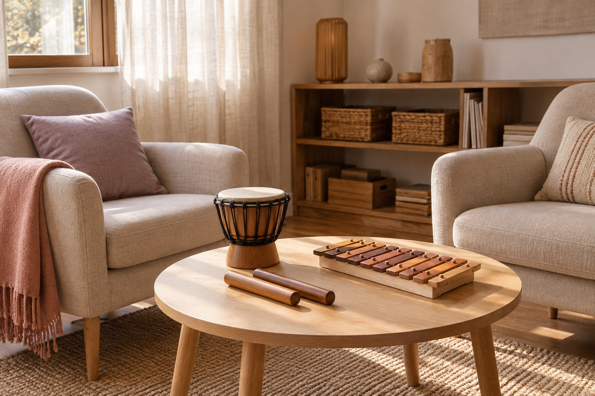

Bambini
Percorsi dedicati ai più piccoli. Qui saranno presentati destinatari, attività e modalità di coinvolgimento delle famiglie.
Musicoterapia
Percorsi per bambini, adolescenti e adulti. Un primo incontro è il punto di partenza per conoscere la persona, la richiesta e le possibilità del lavoro insieme.
Percorsi dedicati ai più piccoli. Qui saranno presentati destinatari, attività e modalità di coinvolgimento delle famiglie.
Percorsi dedicati agli adolescenti, con spazio all’espressione personale e alla relazione attraverso l’esperienza musicale.
Incontri e percorsi per adulti. Yasmin descriverà modalità, destinatari e obiettivi delle proposte individuali o di gruppo.

Qui troverai le fotografie reali degli ambienti, le sedi e le informazioni per raggiungere gli studi. La foto accanto è solo un esempio per la demo; indirizzi e disponibilità sono da confermare.
In questa sezione sarà possibile consultare e scaricare il curriculum originale di Yasmin.
Il corso online sulla respirazione è in preparazione. La pagina dedicata raccoglierà il programma, i destinatari e le modalità di accesso.
Qui saranno inserite le testimonianze reali, dopo aver raccolto l’autorizzazione alla pubblicazione.

Per un percorso, una lezione o una collaborazione musicale.
Contatta Yasmin